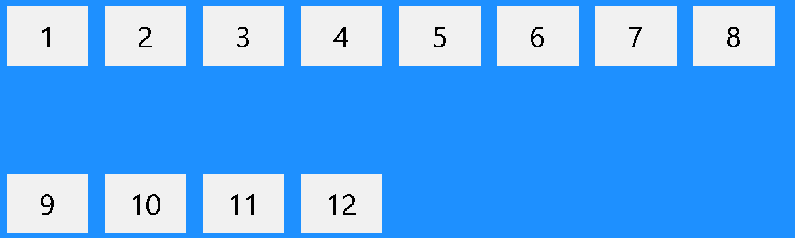
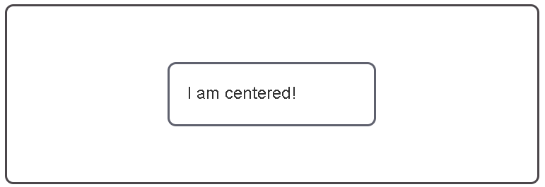

Ilia Okunev
Responsive Web Design is about using HTML and CSS to automatically resize, hide, shrink, or enlarge, a website, to make it look good on all devices (desktops, tablets, and phones)
The Flexible Box Layout Module, makes it easier to design flexible responsive layout structure without using float or positioning.
The flex-direction property defines in which direction the container wants to stack the flex items.
The flex-wrap property specifies whether the flex items should wrap or not.
The flex-flow property is a shorthand property for setting both the flex-direction and flex-wrap properties.
The justify-content property is used to align the flex items.
The align-items property is used to align the flex items vertically.
The align-content property is used to align the flex lines.
There are some other properties which help to make responsive web and help to solve common problems like perfect centering, responsive image gallery, responsive and light web sites
The CSS Grid Layout Module offers a grid-based layout system, with rows and columns, making it easier to design web pages without having to use floats and positioning. A grid layout consists of a parent element, with one or more child elements.
An HTML element becomes a grid container by setting the display property to grid or inline-grid. All direct children of the grid container automatically become grid items.
The grid-column property to specify where to place an item. Item1 will start on column-line 1 and end on column-line 5
the grid-row property to specify where to place an item. Item1 will start on row-line 1 and end on row-line 4.
The grid-area property can be used as a shorthand property for the grid-row-start, grid-column-start, grid-row-end and the grid-column-end properties. Item8 will start on row-line 1 and column-line 2, and end on row-line 5 column-line 6
The recipes are common layout patterns, things you might need to implement in your own sites.
Refers to a two-column box with an image on one side and descriptive text on the other.
CSS Grid, float fallback.
Lining items up in rows and columns.
CSS Grid
How to center an item horizontally and vertically?
Flexbox.
Creating a footer which sits at the bottom of the container or viewport when the content is shorter.
CSS Grid, Flexbox
A navigation pattern where some links are visually separated from the others.
Flexbox, margin
Creating a list of links to allow the visitor to navigate back up through the page hierarchy.
Flexbox